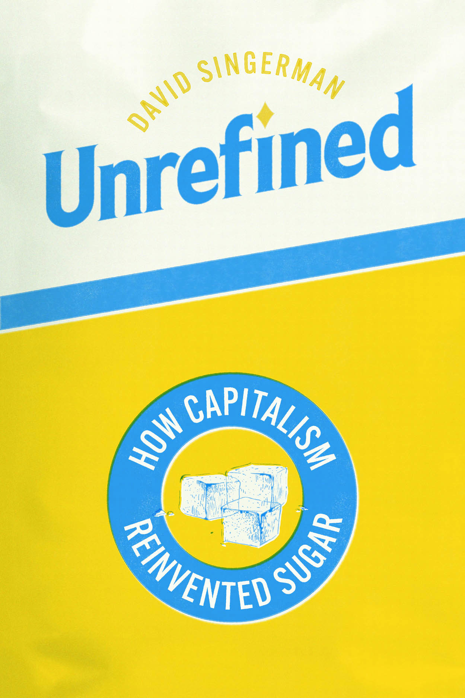

David Singerman | Writing
Book
Unrefined: How Capitalism Reinvented Sugar
University of Chicago Press, 2025
Click here to order from the publisher.
Sugar is everywhere in the western diet, blamed for epidemics of obesity, diabetes, and other modern maladies. Our addiction to sweetness has a long and unsavory history. Over the past five hundred years, sugar has shaped empires, made fortunes for a few, and brought misery for millions of workers both enslaved and free. How did sugar become a defining modern food and an essential global commodity?
In Unrefined, David Singerman recasts our thinking about this crucial substance in the history of capitalism. Before the nineteenth century, sugar’s value depended on natural qualities: its color, its taste, where it was grown, and who had made it. But beginning around 1850, a combination of plantation owners, industrialists, and scientists set out to redefine sugar itself. Deploying the tools and rhetoric of science, they transformed not just how sugar was produced or traded but even how people thought about it. By changing sugar into a pure chemical object, these forces stripped power from workers and enabled—and obscured—new kinds of fraud, corruption, and monopoly.
Taking us to unexplored spaces in the world of sugar, from laboratories and docks to refineries and the halls of Congress, Singerman illuminates dark intersections of the histories of corruption, science, and capitalism.